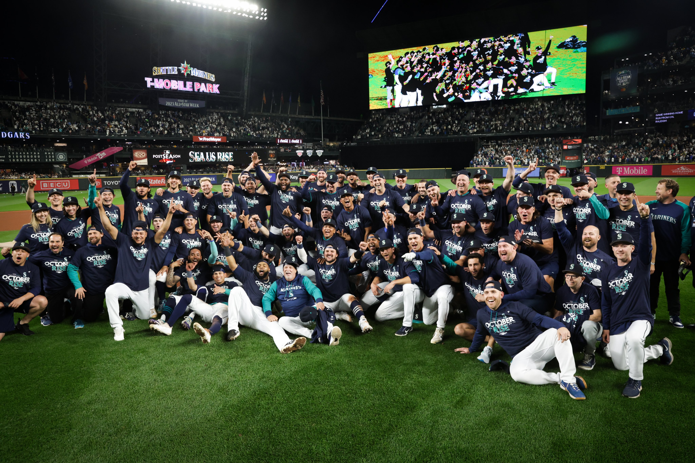

Seattle Mariners
Discover the players that make up this legendary team
* Players with a  indicate an All-Star selection in 2023
indicate an All-Star selection in 2023
Pitchers
- #52 Prelander Berroa (RP)
- #47 Matt Brash (RP)
- #49 Isaiah Campbell (RP)
- #58 Luis Castillo (SP)
- #36 Logan Gilbert (SP)
- #7 Marco Gonzales (SP)
- #62 Emerson Hancock (SP)
- #68 George Kirby (SP)
- #54 Dominic Leone (RP)
- #59 Easton McGee (SP)
- #50 Bryce Miller (SP)
- #75 Andres Munoz (RP)
- #56 Penn Murfee (RP)
- #38 Robbie Ray (SP)
- #60 Tayler Saucedo (RP)
- #55 Gabe Speier (RP)
- #46 Trent Thornton (RP)
- #48 Justin Topa (RP)
- #33 Bryan Woo (SP)
Infielders
- #2 Tom Murphy (C)
- #29 Cal Raleigh (C)
- #76 Jose Caballero (2B)
- #3 J.P. Crawford (SS)
- #23 Ty France (1B)
- #0 Sam Haggerty (2B)
- #4 Josh Rojas (2B)
- #28 Eugenio Suarez (3B)
Outfielders
- #44 Julio Rodriguez (CF)
- #8 Dominic Canzone (LF)
- #35 Teoscar Hernandez (RF)
- #10 Jarred Kelenic (LF)
- #25 Dylan Moore (LF)